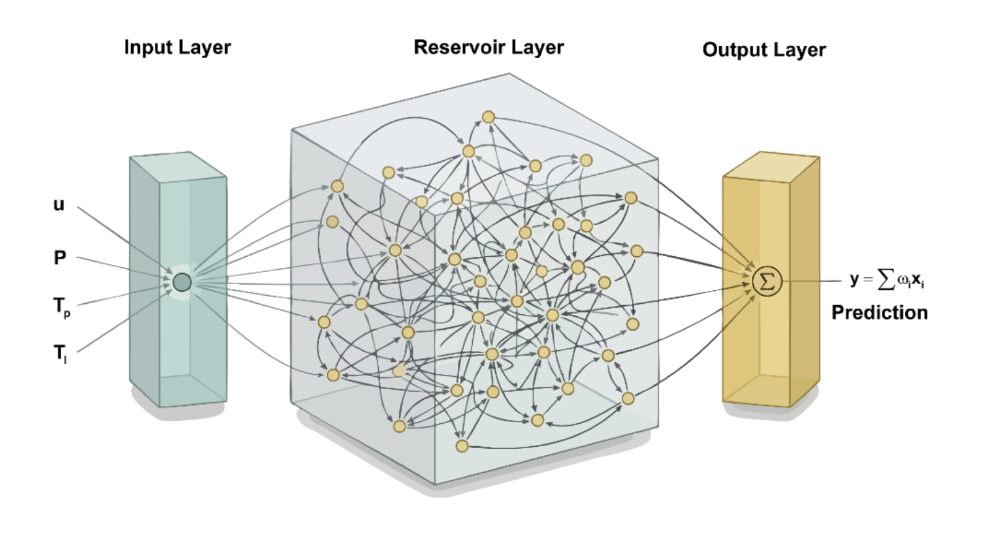
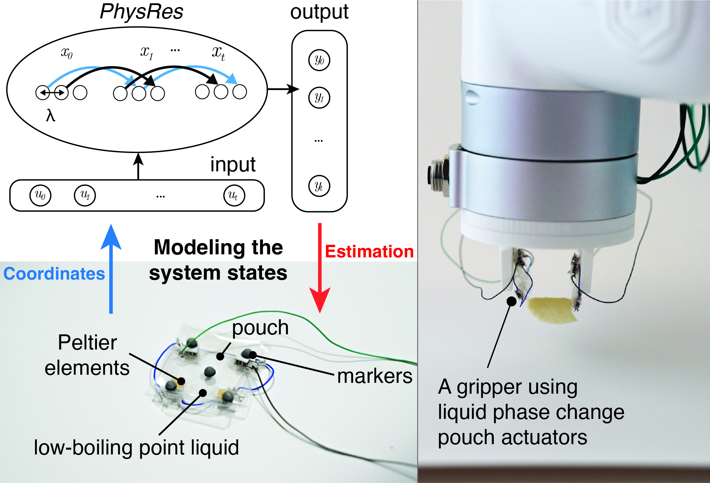
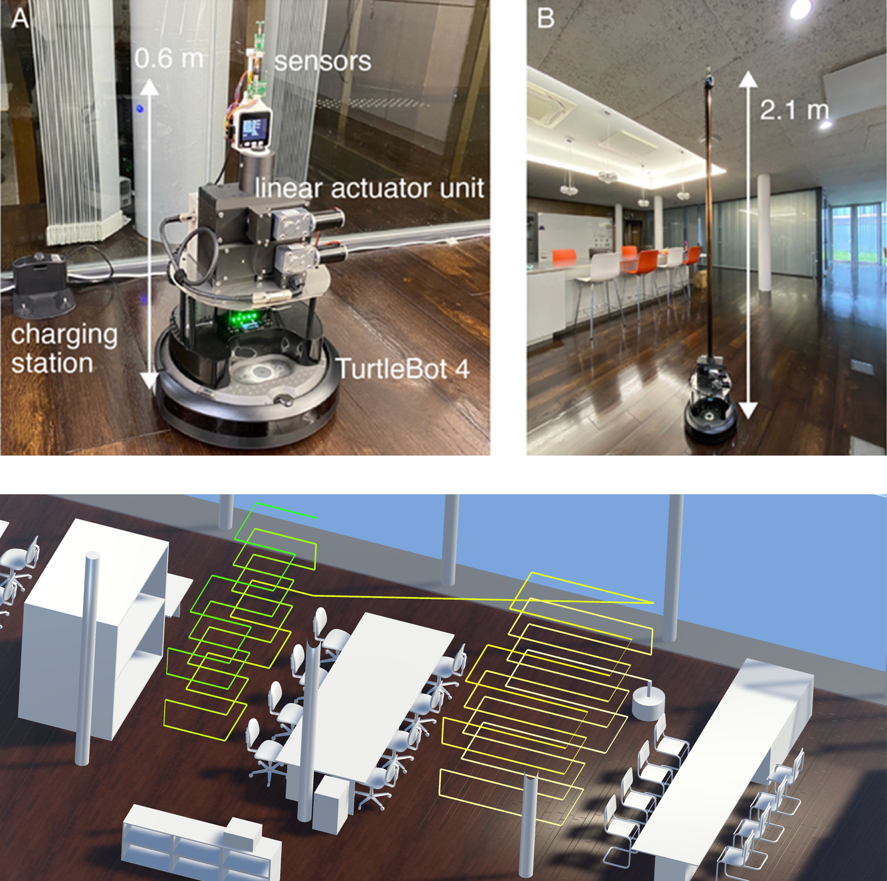
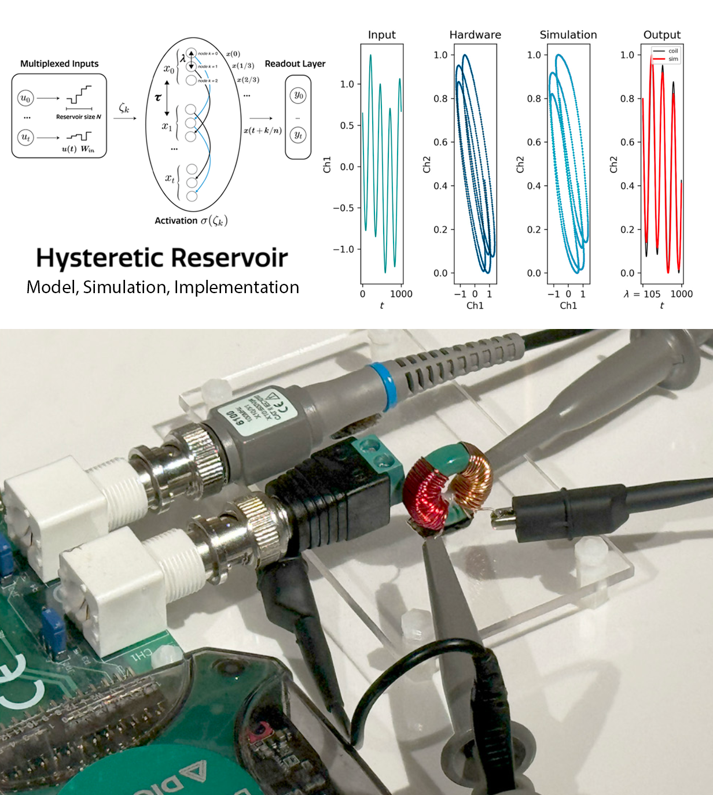
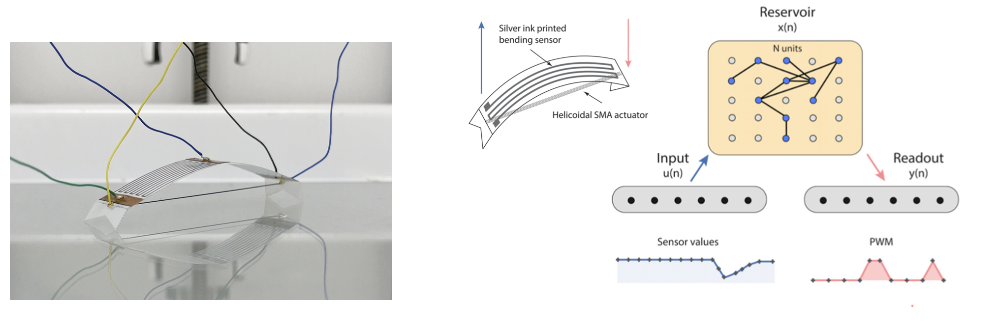
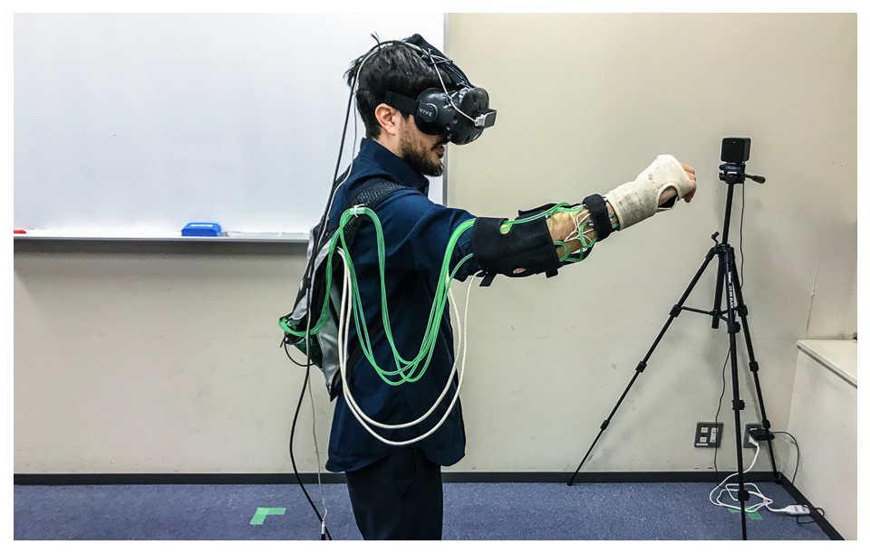
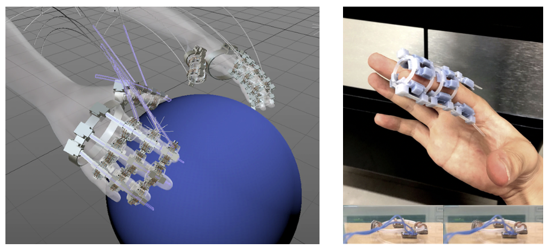
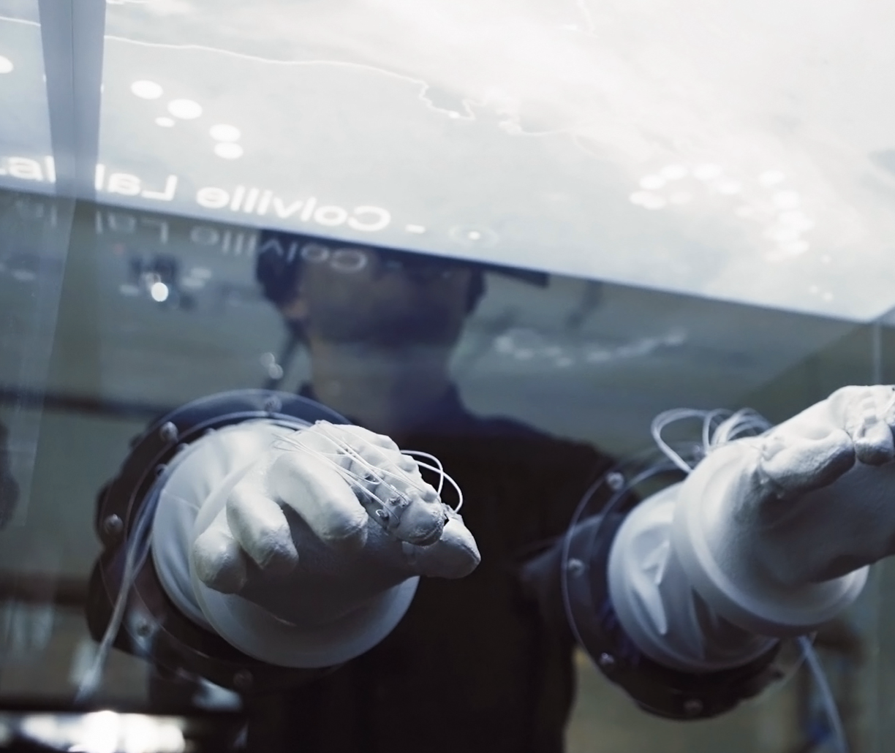

Neuromorphic Systems
Physical dynamics, reservoir computing, and learning-enabled control for soft, embodied machines.
My long-term academic vision is to bridge the gap between fundamental principles and next-generation computational paradigms. By leveraging unconventional substrates, ranging from hysteretic materials to fluid dynamics, my objective is to pioneer embodied intelligence systems and optimize for energy efficiency, adaptability, and form-factor so as to overcome the limitations of traditional silicon-based architectures.
Concurrently, my research in generative design, applied electromagnetics, and machine perception aims to seamlessly integrate these novel computational mechanisms into real-world engineering applications. I am deeply committed to leading interdisciplinary research initiatives that translate theoretical breakthroughs into scalable hardware technologies, such as in autonomous robotics and 3D visualization technologies. Through dedicated mentorship and cross-institutional collaborations, my goal is to cultivate a dynamic "research and deployment" ecosystem that empowers the next generation of scientists and innovators to build impactful, human-centric technologies.
Physical dynamics, reservoir computing, and learning-enabled control for soft, embodied machines.
Spatial perception and estimation through monocular vision, remote sensing, and learned physical-field models.
Generative design, computational fabrication, robotic actuation, and autonomous sensing systems.
Newest first, including accepted and forthcoming papers.



PhysRes is an open-source, extensible framework designed to tackle the prediction of complex time-series data and control the behavior of soft actuators using the paradigms of physical reservoir computing.




